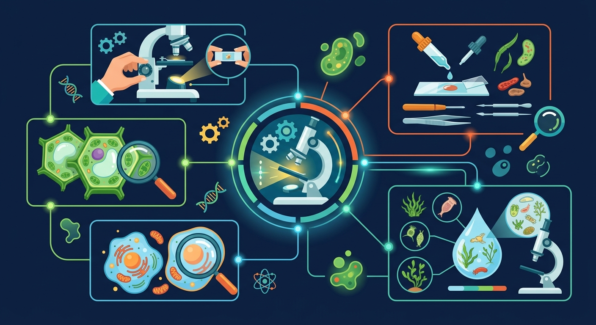

📑 知识图谱
🤝 AI 学伴
📚 课程内容
Gallery
|
🗺️ 知识地图
🛤️ 学习路径
TeachAny
导入
部件认识
使用步骤
放大倍数
练习
小结
知识图谱
⏮
▶
⏭
0:00 / 0:00
🎧 听讲解
🔬 生物
七年级上
细胞基础
互动课件
显微镜的使用
掌握光学显微镜各部件与规范操作步骤，探索微观世界的大门

显微镜的使用
概念
方法
易错
迁移
无字生图 + HTML 中文叠标